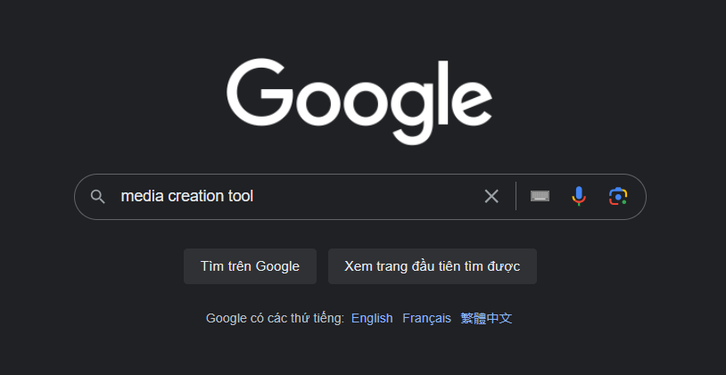
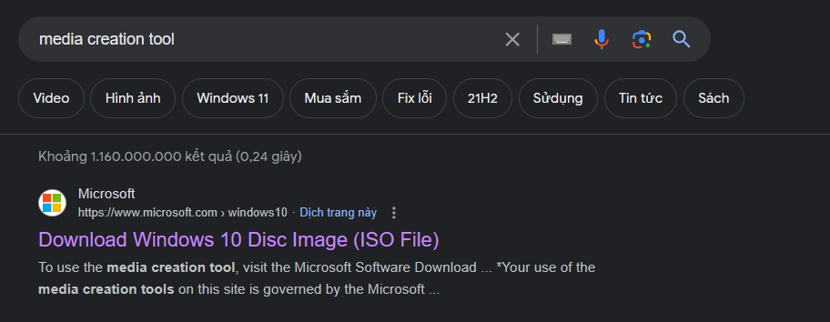
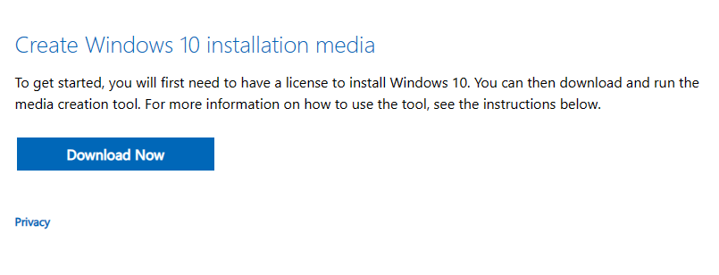
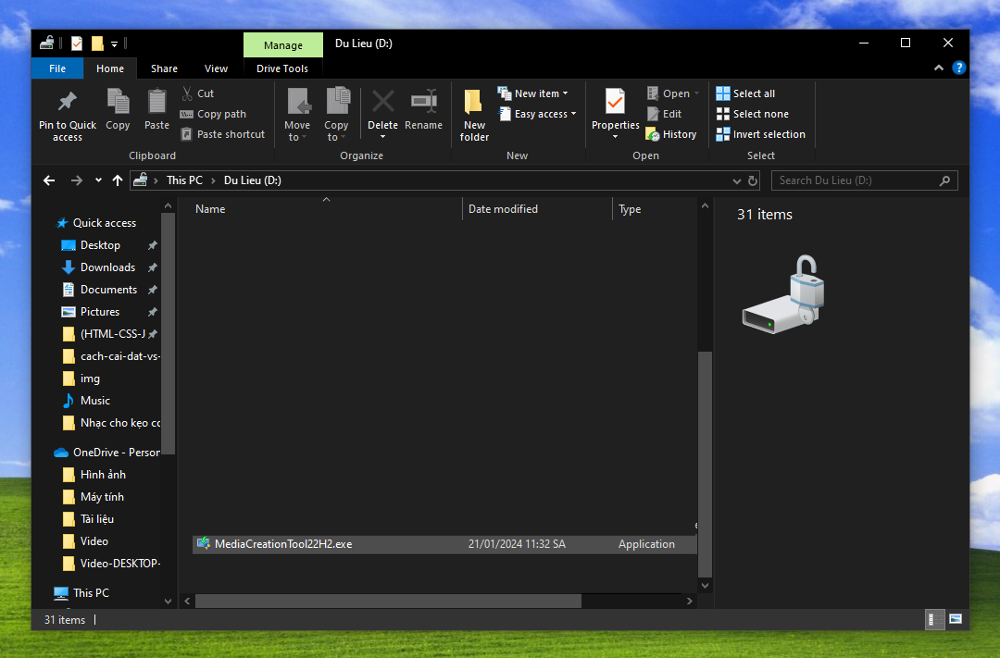
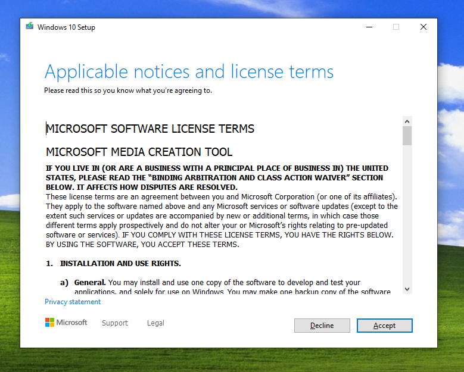
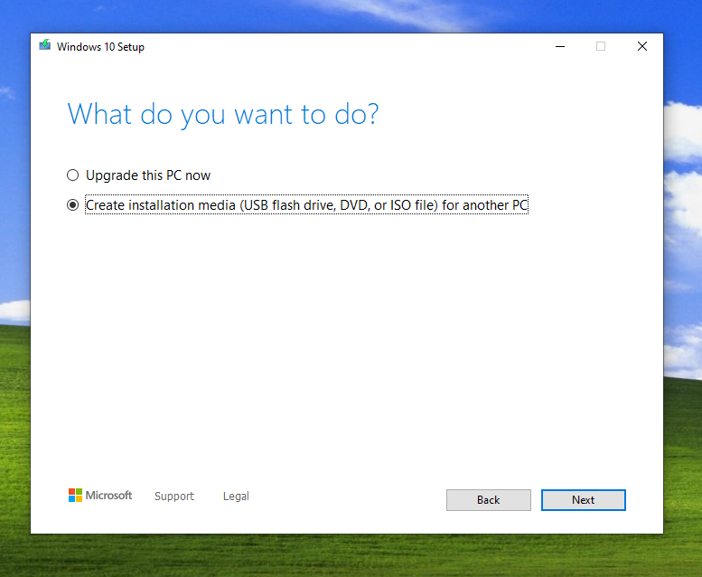
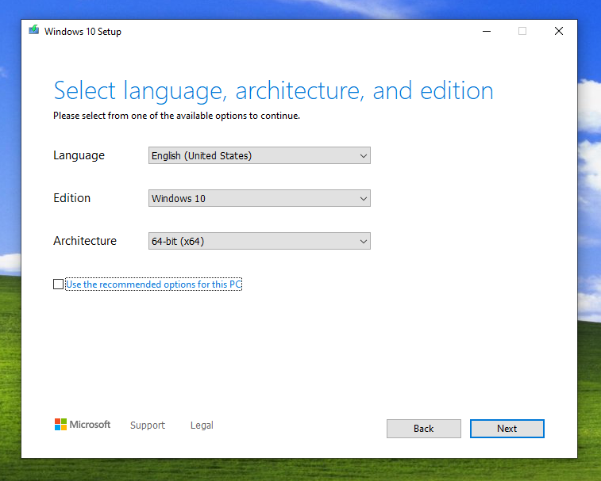
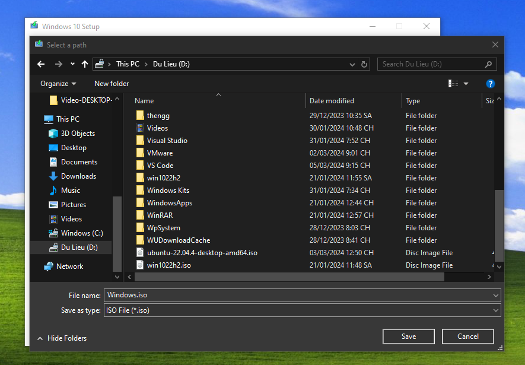
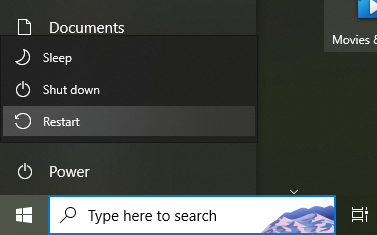

Cài lại Win là gì?
Việc cài lại Win đơn là việc chúng ta vĩnh viễn xóa đi bản Win cũ (thường là những bản Win đã gặp lỗi khó khắc phục trong quá trình sử dụng) và thay thế bằng một bản Win khác mới hoàn toàn.
Khi nào cần cài lại Win?
Bạn chỉ nên cài lại Win cho máy trong 2 trường hợp, trường hợp thứ nhất là máy tính gặp lỗi, và những lỗi này không thể khắc phục nếu chúng ta không tiến hành cài lại Win, trường hợp thứ 2 là các bạn không thích, không muốn dùng bản Win hiện tại nữa nên muốn chuyển sang một bàn Win khác để sử dụng.
Cài lại Win có cần USB không?
Việc cài lại Win có cần USB hay không thì còn tùy vào tình trạng máy tính của bạn, nếu máy tính của bạn vẫn còn chạy ổn định và mượt mà, thì bạn có thể dễ dàng tiến hành cài lại Win mà không cần USB, còn nếu như gặp lỗi nặng (như bật máy không vào được Win) thì bắt buộc bạn phải tiến hành cài lại Win với USB hoặc Reset Windows.
Hướng dẫn cài lại Win không cần USB
Nếu như bạn không có USB, thì hãy thực hiện các bước sau để tiến hành cài Win cho máy tính.
Lưu ý trước khi cài lại Win
Trước khi cài lại Win, các bạn hãy lưu ý những điều này:
Khi cài lại Win, chúng ta sẽ cài trên ổ C:, tất cả dữ liệu trong ổ C: sẽ bị XÓA sạch hết, nên các bạn hãy nhớ sao lưu hết dữ liệu bằng cách copy chúng qua ổ khác ổ C: (ổ D:, ổ E:, v.v).
Hãy phân biệt ổ C: với các ổ khác bằng cách đổi tên ổ C: để tránh xóa nhầm các ổ khác.
Các bước thực hiện:
- Lên trình duyệt và gõ "Media Creation Tool" vào thanh tìm kiếm. 
- Chọn trang web xuất hiện đầu tiên của Microsoft. 
- Nhấn Download Now để tải file Setup về. 
- Tìm file Setup vừa lưu trên máy, nhấp đúp chuột vào file Setup. 
- Đồng ý điều khoản của Microsoft, nhấn Next để tiếp tục. 
- Chọn "Create Installation Media", nhấn Next để tiếp tục. 
- Ở đây bạn sẽ được quyền chọn tải bản cho cấu trúc 64-bit hoặc 32-bit cho Win 10, bạn cũng có thể tích vào ô phía dưới để file Setup chọn phiên bản phù hợp cho máy, nhấn Next để tiếp tục. 
-
Chọn ISO file và nhấn Next để tải về.
Lưu ý: Các bạn BẮT BUỘC phải tải file ISO tại ổ khác ổ C: (Ví dụ: ổ D:, ổ E:), vì ổ C: khi cài Win dữ liệu sẽ bị XÓA sạch hết.

- Sau khi đã cài đặt hoàn tất, bạn hãy giữ nút Shift trên bàn phím và chọn vào nút Restart ở Start Menu. 